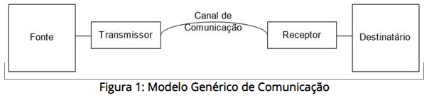
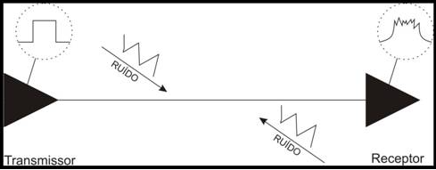

◉ O canal de transmissão
Para entender o funcionamento pleno das redes de comunicação é necessário compreender o papel que cada
componente de um sistema de comunicação exerce.
O objetivo de um sistema de comunicação é transmitir a informação da fonte (ou origem) até o usuário
(ou destino, destinatário). A forma de onda no receptor é desconhecida até que ela seja recebida por ele,
ou seja, a transmissão de uma informação é na verdade o envio de mensagens que, a princípio, são
desconhecidas pelo receptor.
O modelo genérico de uma rede de comunicação é representado de acordo com a figura 01, ilustrada abaixo.
Vê-se, como já foi previamente citado, que há a fonte, que têm a informação que será enviada, o transmissor,
que transmite a informação no sistema, o canal de comunicação, por onde a informação trafega, o receptor
dessa informação, e o destinatário, ponto final da informação neste trecho de comunicação. (DANTAS, 2002)

O transmissor é o responsável pela adequação do sinal às características do canal escolhido, visando
a recuperação do mesmo no destino. Já o receptor deve detectar o sinal recebido e adequá-lo a um formato
reconhecido pelo destino. O canal representa o meio físico que é usado no transporte da informação, e
pode ser, por exemplo, um cabo de par trançado (blindado ou não), cabo coaxial, cabos ópticos, guias de
onda, a própria atmosfera, o vácuo, entre outros. Cada canal possui características de transmissão e
suscetibilidade a interferências que necessitam ser adequadas para que a informação possa ser transportada.
Como resultado dos efeitos do canal, a informação recebida sempre será diferente da informação transmitida.
➤ Interferências
Os canais de transmissão estão sujeitos a diversos fenômenos que podem degradar o sinal transmitido como a distorção
de retardo, de atenuação, distorção harmônica, distorção característica, ruídos, diafonia, eco, phase jitter e drop-out
(MF101 Furukawa). Esses fenômenos são brevemente descritos a seguir:
• Distorção de Retardo: ocorre quando, num canal, a fase do sinal não varia de forma linear com a frequência, fazendo com que várias componentes de frequência sejam transmitidas em tempos diferentes. Quando o pulso for recebido e interpretado, estará comprometido.
• Distorção de Atenuação: ocorre quando há atenuação seletiva das componentes de frequência de um sinal. Quando num sinal ocorre a atenuação demasiada de frequências baixas ou altas, o sinal torna-se deformado.
• Distorção Harmônica: acontece devido ao sinal ser amplificado e, por falha de projeto, a intensidade de entrada for excessiva. Há uma excursão pelas regiões não-lineares da curva de transferência e filtragem.
• Distorção Característica: causada pelos limites de largura de banda do canal, alonga os pulsos, causando um espalhamento no tempo que interfere nos símbolos adjacentes do sinal.
• Ruído: perturbação elétrica aleatória. Pode ser térmico ou impulsivo: o primeiro ocorre devido ao movimento térmico dos elétrons, proporcional à temperatura e à banda passante; o segundo representa perturbações repentinas e esporádicas que podem ter causas diversas, como descargas atmosféricas, explosões, ignições e proximidade à reatores ou motores elétricos.
• Diafonia: ocorre quando dois sinais (ou mais) distintos interferem entre si por estarem em canais de transmissão fisicamente próximos.
• Eco: reflexão de parte do sinal geralmente devido a variações de impedância.
• Jitter de Fase: variação instantânea da fase que ocorre quando a curva do sinal transmitido passa por “zero”.
• Drop-Out: perda momentânea da portadora de um sinal.
Estas interferências que podem atingir a transmissão do sinal são problemáticas, pois limitam o desempenho do sistema de
comunicação alterando as características do sinal transmitido a ponto até de que o mesmo não seja mais reconhecido ao
chegar em seu receptor. Visando diminuir a interferência pode-se utilizar, por exemplo, cabeamento blindado, onde a
cobertura metálica (em folha ou malha) é sobreposta ao cabo e aterrada, drenando o ruído que atingiria os cabos internos,
seguindo o princípio da gaiola de Faraday.

Da mesma forma que a interferência pode atingir cabos par-metálicos, pode causar perda e/ou distorção de sinal em sistemas
sem fio. Nos sistemas wireless, a interferência pode ser causada por outros sinais de mesma frequência vindos de uma
enorme quantidade de equipamentos “concorrentes”, incluindo até mesmo os aparelhos de micro-ondas domésticos. Estas
interferências eletromagnéticas são ainda mais críticas quando em ambientes industriais, onde geralmente estão
concentradas enormes quantidades de motores e equipamentos que geram interferências fortes e funcionam usualmente
24 horas por dia.
Quando as interferências eletromagnéticas são críticas e não podem ser eliminadas, utiliza-se a fibra óptica como
canal de transmissão que, por transmitir luz e não sinal elétrico é imune a quaisquer interferências como as citadas acima.
Neste trabalho, será focado principalmente o papel do Canal de Comunicação num link de câmeras IP, onde serão
comparadas as características técnicas nominais de cada um dos sistemas propostos e as características medidas
in loco com os sistemas implantados. Contudo, para que a informação do canal de comunicação possa ser entendida
satisfatoriamente, torna-se necessário comentar-se à respeito das informações pertinentes à transmissão dessa informação,
como os tipos de sinais, largura de banda, taxa de transmissão, capacidade de canal, entre outros.